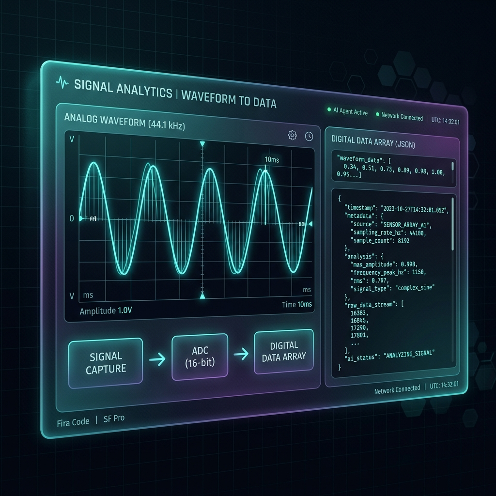
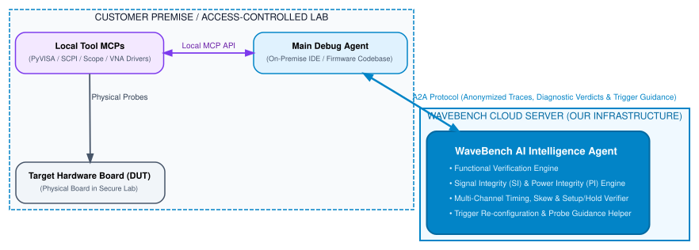

The Hardware Perception Layer for AI Coding Agents
Keep your source code, proprietary RTL, and chip IP 100% private in your access-controlled lab. WaveBench provides deep waveform analysis and signal-level debugging—delivering actionable, hardware-specific debug hints directly to your main coding agent over A2A protocol.

Decoupled 3-Part Architecture & Unique Value
How WaveBench isolates code control on-premise while providing expert signal-level debug hints over A2A protocol

1. Main Debug Agent
Runs in developer's IDE on-premise. Receives hardware-specific debug hints to fix firmware (C/C++/Rust) or logic setups without experiencing context pollution.
2. Local Tool MCPs & Board
Attached directly to oscilloscopes and test equipment in the lab. Collects raw signal arrays and applies SCPI trigger adjustments.
3. WaveBench AI Agent
Specialized Cloud Intelligence Agent over A2A protocol. Performs waveform analysis and generates hardware-specific debug hints for the main coding agent.
Core Unique Selling Propositions (USPs)
Waveform Analysis & Signal Debug
Deep physical waveform analysis detecting edge transitions, bus anomalies, voltage drops, power glitches, and signal timing flaws.
Hardware-Specific Debug Hints
Delivers actionable, hardware-level recommendations directly to your main coding agent (e.g. pull-up values, series damping, clock phase polarity).
Source Code, RTL & IP Privacy
Your firmware, proprietary RTL, and internal chip IP stay 100% on-premise inside your access-controlled lab. Only anonymized numerical signal vectors are analyzed by WaveBench.
Zero Context Pollution
Raw 50,000-sample traces pollute main debug agent context windows. WaveBench digests raw waveforms into concise ~200-token diagnostic verdicts.
See WaveBench Signal Debug Hints Live
Select a signal debug scenario to see how WaveBench performs waveform analysis and outputs hardware-specific debug hints.
// Click "Run Signal Debug" to see hardware-specific hints...Frequently Asked Questions
What is WaveBench?
WaveBench by Niyogi Labs is a specialized Cloud AI Intelligence Agent accessible via Agent-to-Agent (A2A) protocol that serves as the hardware perception layer for AI coding agents. It performs deep waveform analysis and signal-level debugging, returning actionable hardware-specific debug hints.
Does WaveBench require access to proprietary source code or RTL?
No. WaveBench operates on a 3-tier decoupled architecture. Your firmware source code, RTL, and chip IP remain 100% on-premise in your lab. Only anonymized numerical signal vectors are transmitted over A2A protocol.
How does WaveBench prevent context pollution in AI coding agents?
Loading 50,000 raw floating-point signal points into a main debug agent causes severe context rot. WaveBench processes waveforms in isolation and returns structured ~200-token diagnostic verdicts and hardware debug hints.
Which protocols does WaveBench support?
WaveBench communicates over standard A2A (Agent-to-Agent) protocol and integrates with local tool Model Context Protocol (MCP) servers connected to physical test equipment (oscilloscopes, power supplies, logic analyzers).
Register Your Interest
Sign in with 1-click OAuth (GitHub or Google) to confirm your developer identity and join our early interest list.